extra-5 樱井政博的作品集
原标题：Masahiro Sakurai's Creative Works
▶ 原视频：https://youtu.be/frNXwWqZpkI本集没有日语字幕，内容依据画面内嵌英文字幕（OCR）整理。
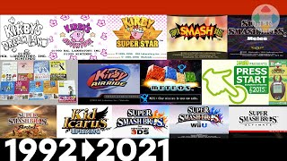
速览
这一集是樱井政博作品年表，每部作品配一句话（依据画面英文字幕）：1992《星之卡比》——为新手量身打造、带人入门游戏；1993《梦之泉物语》——引入复制能力，新手和高手都能玩；1996《超级豪华版》——7 个以上各有故事与规则的模式合集；1999《任天堂明星大乱斗》——四人对战经典，积累伤害再把对手打出画面；2001《大乱斗 DX》——角色与舞台翻倍以上的强化续作；Fami 通专栏「关于游戏的思考」——游戏开发者在周刊上连载最久的专栏，近 20 年；2003《卡比的空中骑士》——按 A 就能玩的对战型赛车，同期卡比动画播出；2005《Meteos》——把方块发射到太空来消除的星际益智；PRESS START——国内外新旧游戏音乐的管弦乐演奏会；《养成！甲虫王者》——养虫并用红外线对战的液晶玩具；2008《大乱斗 X》——首个支持联机的大乱斗，全球销量 1200 万套以上；2012《新光神话》——陆空结合、支持联机的掌机射击；2014 大乱斗 for 3DS / Wii U——毫不缩水的掌机版，以及 8 人对战、amiibo、DLC 的更大 Wii U 版；2018《大乱斗 特别版》——全员参战的终极梦幻作品。最后是「THE END（下一作待定）」。每部作品的企划思路详见 N「游戏概念」分类。
1. 卡比与初代大乱斗 0:00
1992《星之卡比》：为新手量身打造、带人入门游戏。
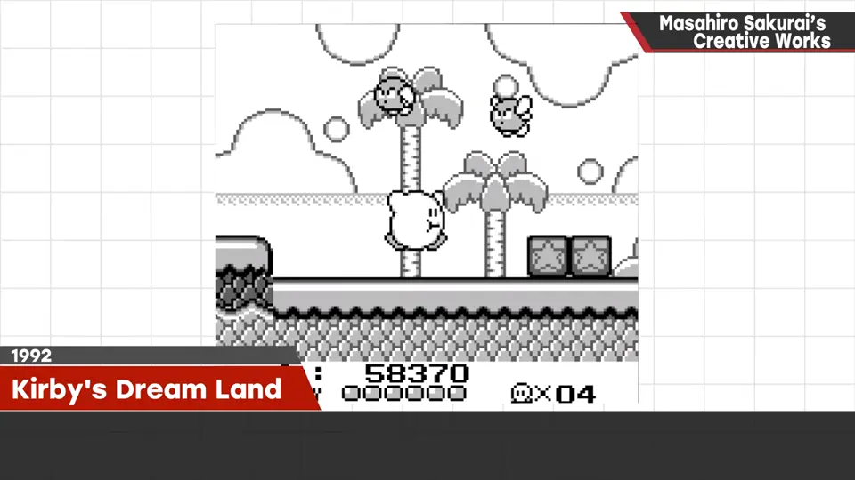
1993《梦之泉物语》：引入复制敌人能力，新手和高手都能玩。1996《超级豪华版》：7 个以上各有故事与规则的模式合集。
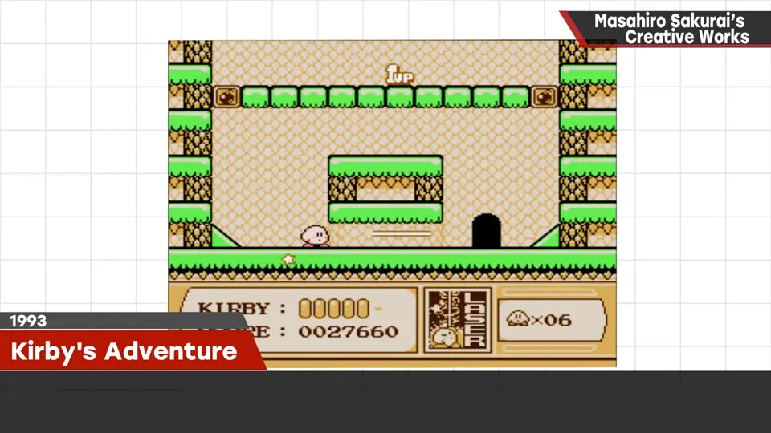
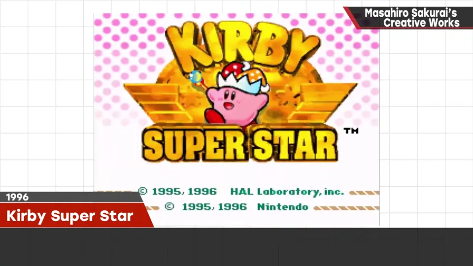
1999《任天堂明星大乱斗》：四人对战经典——积累伤害，再把对手打出画面！
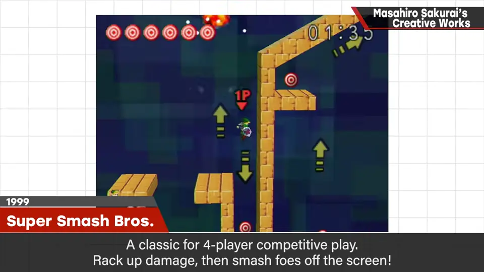
2. 2000 年代 0:42
2001《大乱斗 DX》：角色与舞台翻倍以上的强化续作。
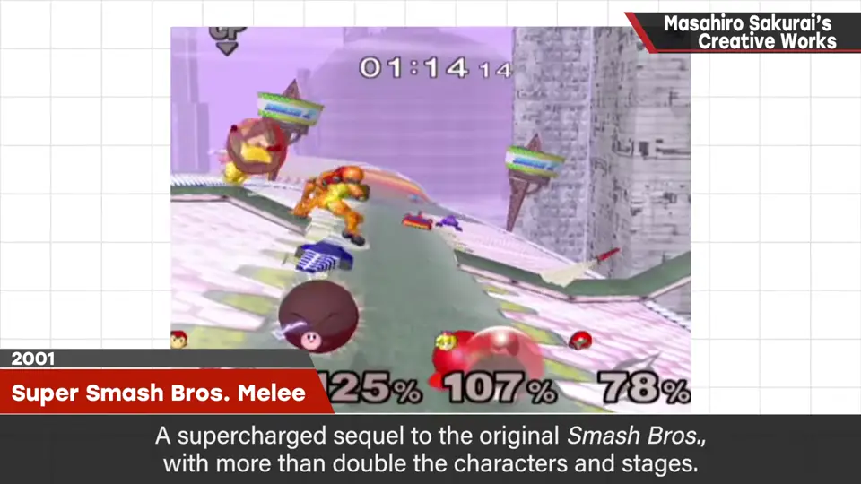
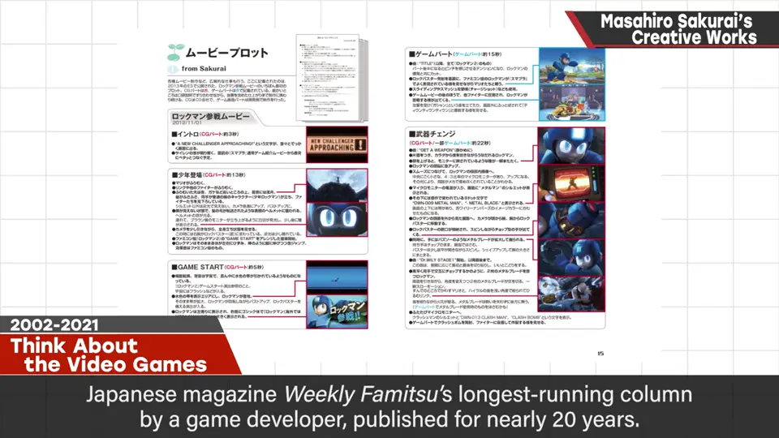
Fami 通专栏「关于游戏的思考」：游戏开发者在周刊上连载最久的专栏，近 20 年。
2003《卡比的空中骑士》：按 A 就能玩的对战型赛车，同期卡比动画播出。2005《Meteos》：把方块发射到太空来消除的星际益智游戏。
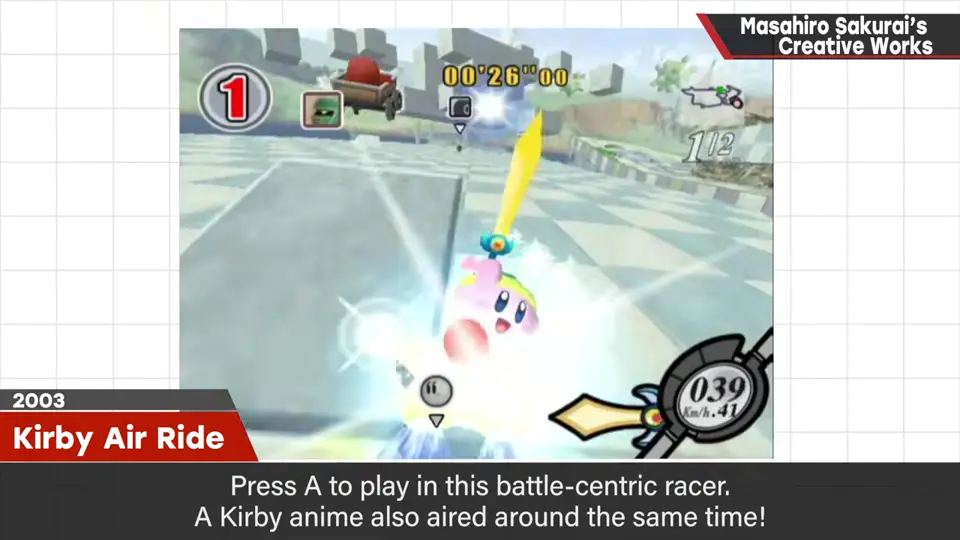
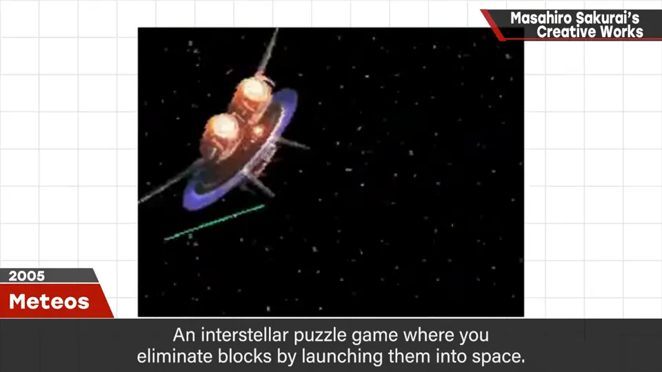
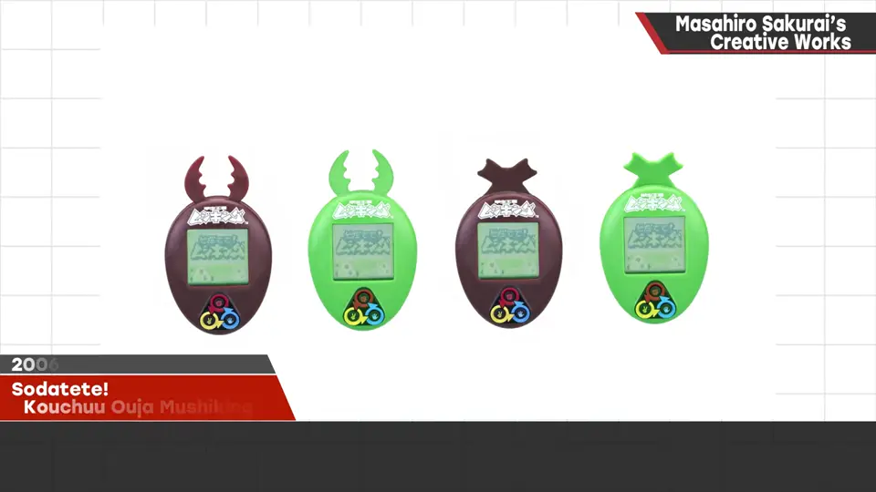
PRESS START：国内外新旧游戏音乐的管弦乐演奏会。《养成！甲虫王者》：养虫并用红外线对战的液晶玩具。
3. 大乱斗 X 到特别版 1:24
2008《大乱斗 X》：首个支持联机的大乱斗，全球销量 1200 万套以上。2012《新光神话》：陆空结合、支持联机的掌机射击。
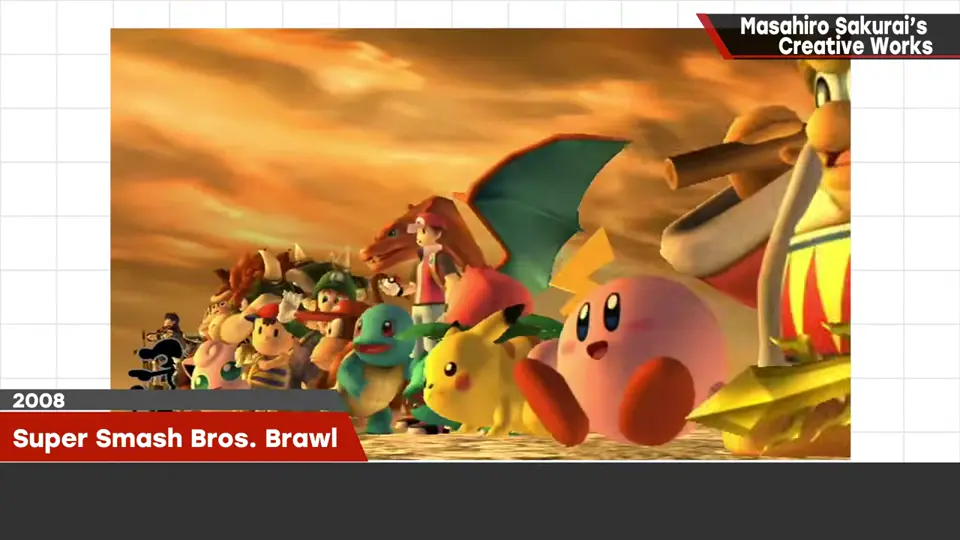
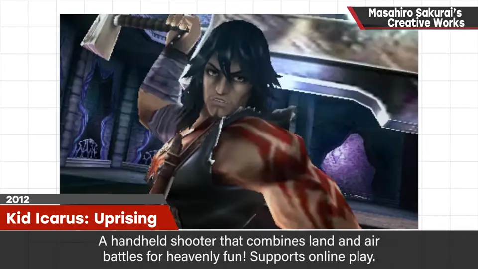
2014 大乱斗 for 3DS：毫不缩水的掌机版；for Wii U：8 人对战、amiibo、DLC 角色与服装的更大版本。
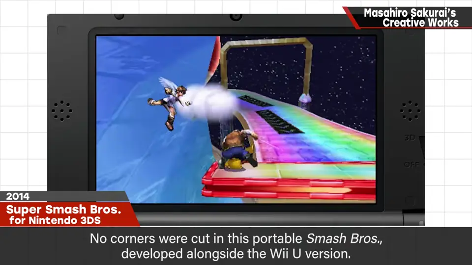
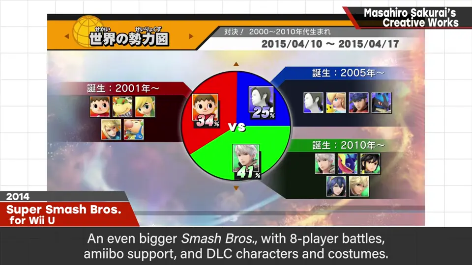
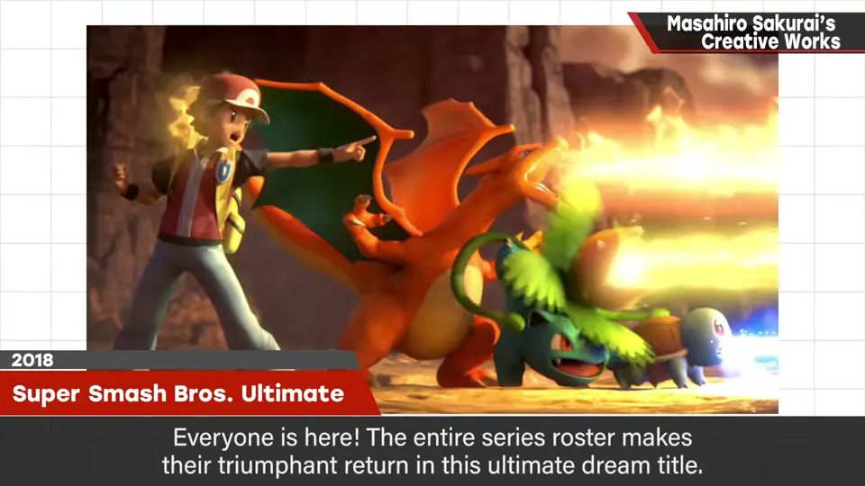
最后是「THE END（下一作待定）」。每部作品的企划思路见 N「游戏概念」分类。
自测题
1. 哪部作品首次加入复制能力？
1993 年的《星之卡比 梦之泉物语》。 0:14
2. 首个支持联机的大乱斗是哪一部？
2008 年的《任天堂明星大乱斗 X》。 1:24
3. 樱井在 Fami 通连载的专栏持续了多久？
近 20 年，是游戏开发者在周刊上连载最久的专栏。 0:49